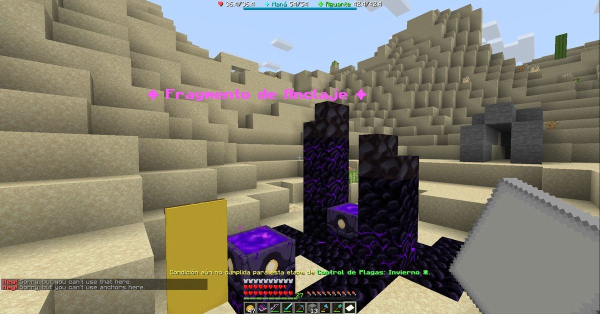
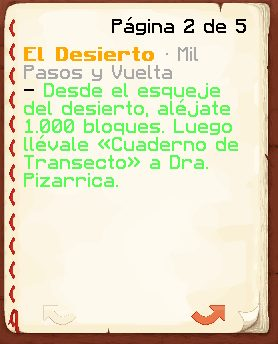

Boletín Oficial del Ayuntamiento del Reino · Se informa, no se alarma
EL HERALDO DEL REINO
Número 414 de octubre de 2026De la tarde del domingo 4 a la mañana del jueves 8 de octubre · cuatro jornadas en un número
VUELVE A HABLAR EL EMPERADOR ANTERIOR, Y LO HACE PARA REÑIR A UN VECINO QUE LE DIJO A UN RECIÉN LLEGADO QUE NO SE PODÍA JUGAR: «LUEGO TENDREMOS QUE CERRAR, PORQUE NO ENTRA NADIE»
El domingo a las 15.05 alguien preguntó en el grupo vecinal «¿se puede jugar?». A las 23.35, XchavitoX le contestó «no», y luego «salu2». El Ministro corrigió en el acto que el Reino está abierto las veinticuatro horas, pero el que preguntaba ya se había ido. Y el lunes a las 09.05, por primera vez en el grupo desde hace semanas, escribió el Emperador anterior: «Luego tendremos que cerrar, porque no entra nadie». Además: la seguridad del Ministro vuelve a su finca, el fragmento del desierto vuelve a llevar a casa, un vecino termina en media hora la caminata que llevaba dos días sin contar, el acto de la Torre ya tiene fecha —este domingo— y el Ministro llama al vecindario «desgraciados».
Redactado por la Oficina de Prensa del Ayuntamiento
PORTADA
«¿Se puede jugar?», «no», y el Emperador anterior que aparece a la mañana siguiente para decir que así no entra nadie
El domingo a las 15.05, alguien cuyo nombre en el grupo vecinal es solo un símbolo
preguntó lo que cualquier recién llegado pregunta antes de entrar: «¿Se puede jugar?».
La pregunta estuvo ocho horas y media sin contestar. A las 23.35 la contestó
XchavitoX, con una sola palabra: «No». Y a continuación, para despedirse:
«Salu2».
El Ministro intervino en el mismo minuto para deshacer el entuerto: «Está las
veinticuatro horas abierto, siempre». XchavitoX le informó a las 23.44 de que ya daba
igual: «Ya se fue hace rato, amigue».
Y entonces, el lunes a las 09.05, en el mismo grupo, escribió alguien a quien esta
Oficina no leía desde hacía semanas en ese sitio: el Emperador anterior. Una frase,
dirigida a quien se diera por aludido: «Luego tendremos que cerrar, porque no entra
nadie». Esta Oficina la publica en portada porque es la primera vez que Su Majestad
anterior abre la boca en el grupo vecinal desde que se fue, y porque cabe entera en un
titular.
Lo que no es, aunque lo parezca leído deprisa, es un anuncio de cierre. Puesta
detrás de las tres frases anteriores se entiende sola: es lo que se le dice al vecino que
contesta «no» a uno que pregunta si puede entrar. El gobierno, por su parte,
desmiente que el Reino tenga previsto cerrar, igual que desmintió el día 27 y el día 1, y se
congratula de que el Emperador anterior esté bien y escriba. Le atenderá en el orden
de llegada: delante tiene a Cliqueame, que espera un título, y al Ministro, que espera mil
cacahuates. Su expediente sigue abierto, porque ha hablado en el grupo vecinal y no en la
plaza, y el reglamento de este periódico es muy claro con los sitios.
EL PARTE DEL PULSO
El fragmento que no llevaba a casa, la seguridad que no volvía a la suya, y una caminata que por fin cuenta
El fragmento del desierto. A la 01.44 del lunes, Rawson98 escribió a la
ventanilla desde el desierto con una fotografía y cuatro palabras: «No me deja volver».
El Fragmento de Anclaje que le había llevado hasta allí no le devolvía: al tocarlo contestaba,
en un idioma que no es el del Reino, que ahí no se podía usar. El Ministro lo vio a
las 09.03 —«¿No? Rip. Voy a avisar»— y a las 09.18 la ventanilla lo dio por
corregido: el fragmento no dejaba pulsarlo a nadie, y ahora sí. No hizo falta cerrar
nada.
La seguridad del Ministro. El domingo a las 19.02, Mazitrvrs había dejado su
testimonio en la ventanilla: «Tu guardia me fue a buscar desde el perímetro de tu mansión
hasta la Granja Felicidad», y una valoración: «Eso le llamo dedicación al
trabajo». El lunes a las 09.18, el gobierno contestó a la queja que el propio Ministro
presentó contra su seguridad en el número anterior: los siete guardias ya no salen de ronda
por el barrio; si se alejan demasiado de la finca, sueltan a quien persiguen y vuelven a su
puesto. Dentro de la finca, sigue la ventanilla, «le seguirán echando a patadas igual».
Y sobre los mil cacahuates que el Ministro pidió el jueves 1, la resolución entera: «Por la
ventanilla, como todo el mundo».
Los mil pasos. El miércoles a las 03.49, Rawson98 volvió a escribir: «Caminé
más de tres mil bloques, volví, y después caminé para el otro lado; no anda la misión».
Andaba bien la misión. Lo que no andaba era la cuenta: el encargo pedía alejarse mil bloques
del esqueje en línea recta, y en su primer viaje, dando vueltas, se había quedado en unos
quinientos noventa. Nadie se lo había dicho, porque la pantalla solo decía «aléjate». Desde
el miércoles a las 08.23 la pantalla lleva la cuenta —«640 / 1.000», y a la vuelta,
cuánto falta—, y a las 08.56, treinta y tres minutos después, Rawson98 ganó el mérito de
Mil Pasos y Vuelta.
Ninguna de estas medidas reviste gravedad. Las tres las destapó alguien que escribió a la
ventanilla en vez de rendirse, y dos de las tres, el mismo vecino.

Domingo, 01.44 de la madrugada del lunes, en el desierto. El Fragmento de Anclaje, con su cartel y su luz, y abajo, en inglés, la respuesta que daba a quien lo tocaba: que ahí no se podía usar. Rawson98: «No me deja volver».Archivo Municipal · pase el ratón para revelarla

El encargo, tal y como lo leía Rawson98 el miércoles a las 03.49: «Desde el esqueje del desierto, aléjate 1.000 bloques». No decía en línea recta. Ahora lo dice la pantalla, con la cuenta delante.Archivo Municipal · pase el ratón para revelarla
ADMINISTRACIÓN
El acto de la Torre, el domingo «como de costumbre»; la hora, por encuesta; y el vecindario, «desgraciado»
El miércoles a las 10.34, el Ministerio fijó la fecha del segundo acto de la Torre. El
cartel daba a elegir entre el viernes 9 y el domingo 11, y el comunicado lo resolvió así: «El
viernes no podrá ser, así que nos quedamos con el domingo, como de costumbre». La hora se
decide por encuesta, y el Ministerio pidió que se votara de una manera concreta: «Marcad
cuándo podéis estar, no solo vuestra hora favorita».
El jueves a las 10.35 el Ministerio volvió a abrir la encuesta. A las 10.39,
cuatro minutos después, añadió un comentario sobre el vecindario que esta Oficina reproduce sin
quitarle ni una letra: «Seréis desgraciados». No explicó a quién se dirigía. Esta Oficina
no tiene acceso al recuento, pero sí al reloj, y sabe que cuatro minutos es lo que se tarda en
mirar una encuesta y no ver a nadie.
El gobierno recuerda que no ha convocado este acto ni el anterior, y que tampoco tiene
opinión sobre la hora. Sí la tiene sobre el adjetivo, y la reserva.
CARTAS AL DIRECTOR
Cartas al director: si se puede jugar, si ya están dentro, y una ruta de los guardias
Jueves, cartas. Se publican como llegaron. Las contestaciones son oficiales, del nuevo
gobierno, y contestan lo que contestan.
Si se puede. Escribe un vecino sin nombre, el domingo a las 15.05: «¿Se puede
jugar?». Le contestaron, en este orden, que no, que sí y que ya se había ido.
Contesta el gobierno: se puede. El Reino no cierra nunca, ni siquiera cuando lo dice
el Emperador anterior, que lo dijo por otra cosa. Ver la portada.
Si ya están. Escribe Ulises, en el grupo vecinal, el jueves a las
02.38: «¿Qué onda? ¿Están en el Reino ya?». Le contestó Kaori a las 04.31,
dos horas después, con un «Weñas».
Contesta el gobierno: en toda esa jornada entró en el Reino un solo vecino,
y no a esa hora. Se recomienda probar de madrugada, que es cuando entra la gente, y no a la hora a
la que se probó, que también era de madrugada.
Una ruta. Escribe Mazitrvrs, a la ventanilla, el domingo a las 19.02: que un
guardia del Ministro le persiguió desde la finca hasta la Granja Felicidad, «eso le llamo
dedicación al trabajo».
Contesta el gobierno: agradece el aviso y la generosidad del remitente con el empleado.
La dedicación se ha limitado a cuarenta y cinco bloques desde su puesto.
Una bienvenida. Escribe Kaori, el lunes a las 11.39, a un recién llegado: «Holiii,
bienvenido; ahí está lo que necesitas para jugar», con una imagen de una niña de dibujos que
saluda.
Contesta el gobierno: nada. Esta carta no pregunta: contesta. Se publica porque es la que
faltaba el domingo a las 15.05.
SOCIEDAD
Tres altas en cuatro días, una sola defunción, y un vecino que lo terminó todo
Cuatro jornadas de calma. El Reino tuvo entre uno y cuatro vecinos por jornada, ningún
mensaje en la plaza y una sola defunción en los cuatro días: la de Gaaraham03, el
lunes a las 18.42, a manos de El Ratero, que se llevó, según el registro, la vida y nada
más. Esta Oficina lo anota porque es la primera vez desde que existe el periódico que una
semana entera cabe en una línea del Registro de Defunciones.
Hubo tres altas. NexoGamerTvs entró el lunes a las 11.44 y en once minutos fabricó su
primera herramienta de piedra. SanLiok, el lunes a las 13.26. Y cerotito05, el
martes a las 06.45. Los tres entraron sin pasar por el grupo vecinal, que es la forma de no
encontrarse con un «no».
Y Rawson98, que estuvo en la ventanilla dos veces en cuatro días, fue también el vecino
que más hizo. El lunes a la una ganó Rastro Frío; el miércoles a las 03.15, en el mismo
minuto, la Vieja Betsy y ¿Quién es el saqueador ahora?, que es lo que se gana
tumbando a un saqueador con su propia ballesta; y a las 08.56, Mil Pasos y Vuelta. Gaaraham03,
por su parte, ganó el martes a las 19.48 el de Membrete y Escarcha, cuatro días después que
Rawson98, que esta Oficina no sabe si es una carrera pero lo parece.
Cartel aparecido en el tablón de eventos · colgado por el Ministerio el jueves 1 de octubre a las 22.54 · fecha fijada el miércoles 7 a las 10.34 · no lo firma nadie de esta casa
LA ÚLTIMA CONEXIÓN · ESTE DOMINGO
El Primer Pensamiento vuelve a convocaros. La segunda llamada de la Torre ya tiene día: el domingo 11 de octubre. La hora, por encuesta.
Quien habla vuelve a hacerlo en primera persona, como en la Audiencia. Dice haber
estudiado los núcleos que el vecindario le entregó el domingo 27, y que ha encontrado
algo siguiéndolos. Esta Oficina reproduce, como entonces, solo la parte que es
convocatoria:
ACUDID DE NUEVO AL PRIMER PENSAMIENTO. Traed vuestras armas. Conservad la
calma cuando el suelo deje de merecer vuestra confianza. Los núcleos ya han cumplido su
propósito. Ahora os corresponde a vosotros.
Cuándo. El domingo 11 de octubre, «como de costumbre»; el viernes
«no podrá ser». La hora, por encuesta: marcad todas las horas a las que podáis
estar. Dónde.La Torre. Qué es. Según el propio cartel, la continuación de la
historia y «la recta final del Reino», y todo lo que ocurra contará para
siempre.
El nuevo gobierno hace saber que no ha convocado este acto y que tampoco convocó el
anterior. Esta Oficina recuerda que el anterior costó noventa y seis defunciones, y que
este cartel pide expresamente que se lleven armas.
Reproducido por la Oficina de Prensa · se copiará en cada número hasta el día del acto
El parte de la jornada
Jornadas en este número
4
Vecinos en el Reino
8 en cuatro días
Máxima concurrencia
2 a la vez, el miércoles a las 03.07
Mensajes en la plaza
0
Defunciones
1
Altas
3
Veces que alguien preguntó si se podía jugar
1
Veces que le contestaron que no
1
Frases del Emperador anterior en el grupo vecinal
1
Cierres previstos del Reino
0, según el gobierno
Guardias del Ministro fuera de la finca
0, desde el lunes
Medidas correctoras
3
Minutos entre la medida y el mérito de Rawson98
33
Vecinos calificados de «desgraciados» por el Ministerio
todos, en principio
Días para el acto de la Torre
3, al cierre de este número
Aviso oficial
AVISO DEL GOBIERNO. Se informa al vecindario de que el Reino está abierto las
veinticuatro horas, todos los días, y de que a la pregunta «¿se puede jugar?» la respuesta
oficial es sí. Se ruega a XchavitoX que la memorice.
NOTA DE ESTA OFICINA: al Emperador anterior, bienvenido al grupo; se le espera en la
plaza. Al Ministerio, que marque en la encuesta todas las horas en que pueda insultar al
vecindario, no solo su favorita.